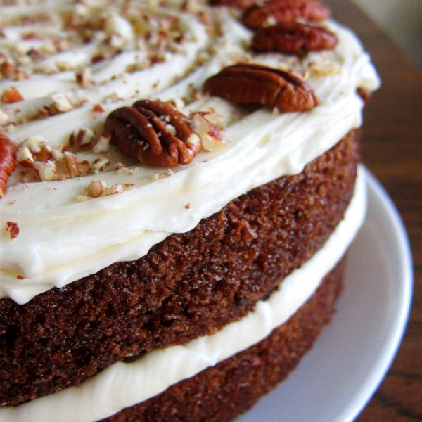

Carrot Cake
- 4 eggs
- 1 1/4 cups vegetable oil
- 2 cups white sugar
- 2 teaspoons vanilla extract
- 2 cups all-purpose flour
- 2 teaspoons baking soda
- 2 teaspoons baking powder
- 2 teaspoons ground cinnamon
- 1/2 teaspoon salt
- 3 cups grated carrots
- 1 cup chopped pecans
- 1/2 cup butter, softened
- 8 ounces cream cheese, softened
- 4 cups confectioners' sugar

Directions
- Preheat oven to 350 degrees F (175 degrees C). Grease and flour a 9x13 inch pan.
- In a large bowl, beat together eggs, oil, white sugar and 2 teaspoons vanilla. Mix in flour, baking soda, baking powder, salt and cinnamon. Stir in carrots. Fold in pecans. Pour into prepared pan.
- Bake in the preheated oven for 40 to 50 minutes, or until a toothpick inserted into the center of the cake comes out clean. Let cool in pan for 10 minutes, then turn out onto a wire rack and cool completely.
- To Make Frosting: In a medium bowl, combine butter, cream cheese, confectioners' sugar and 1 teaspoon vanilla. Beat until the mixture is smooth and creamy. Stir in chopped pecans. Frost the cooled cake.